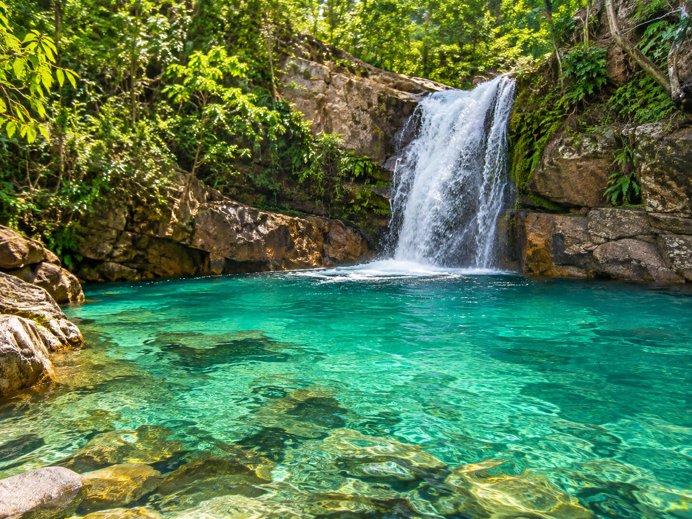

Cachoeira Santa Bárbara
Com águas cristalinas em tons de azul-turquesa, a Cachoeira Santa Bárbara é um verdadeiro refúgio em meio à natureza. Cercada pela vegetação do Cerrado, oferece uma experiência encantadora para quem busca tranquilidade, contemplação e um banho revigorante.